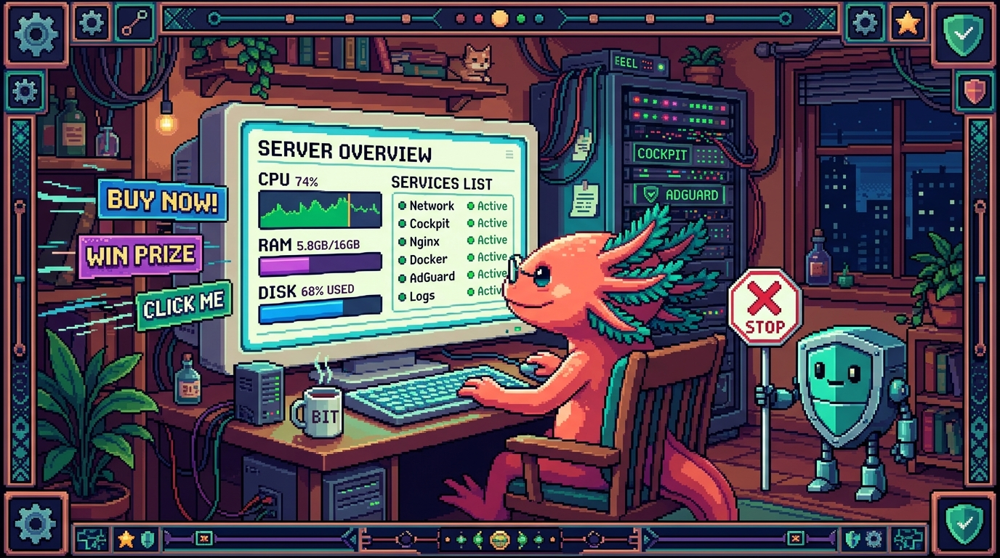

Capitulo 12 — Administración web: Cockpit y AdGuard

Hasta ahora has administrado tu NAS escribiendo comandos en una terminal negra. Funciona, pero no siempre es lo más cómodo: a veces quieres ver de un vistazo cuánta RAM te queda, reiniciar un servicio con un clic o saber si el disco de datos se está llenando. En este capítulo conocerás dos paneles web que viven dentro de polypaw-nas, tu laptop Acer Nitro AN515-54 reciclado: Cockpit, una sala de control para el servidor entero, y AdGuard Home, un portero que bloquea anuncios y rastreadores para toda tu casa. Bit, el ajolote, está emocionado: por fin va a tener botones que apretar en vez de teclear comandos con sus patitas.
1. ¿Por qué un panel web si ya tengo la terminal?
La terminal es poderosa, pero tiene un costo: hay que recordar comandos. Un panel web te muestra la información ya masticada, con gráficas y botones, y puedes abrirlo desde el navegador de cualquier dispositivo de tu red. No reemplaza a la terminal (de hecho, Cockpit te da una terminal dentro del navegador), pero baja muchísimo la fricción del día a día.
🟦 ¿Que significa? — Panel web (interfaz web de administración)
Es un programa que corre en el servidor y te muestra páginas en el navegador para administrarlo: ver el estado, cambiar configuraciones, reiniciar cosas. En lugar de escribir comandos, haces clic. ¿Para qué sirve? Para administrar el servidor de forma visual y rápida, sin memorizar comandos. ¿Dónde aparece en polypaw-nas? Tienes dos: Cockpit (administración general del sistema, puerto 9090) y AdGuard Home (bloqueo de anuncios por DNS, su propio panel).
🟦 ¿Que significa? — Puerto
Imagina que la dirección IP de polypaw-nas es la dirección de un edificio, y los puertos son los números de cada apartamento dentro de ese edificio. Un mismo servidor puede ofrecer muchos servicios a la vez, cada uno escuchando en su propio puerto. ¿Para qué sirve? Para que un solo equipo atienda varios servicios distintos sin que se confundan entre sí. ¿Dónde aparece en polypaw-nas? Cockpit escucha en el puerto 9090, Samba usa los suyos, AdGuard Home usa el 53 (DNS) y un puerto propio para su panel (normalmente el 3000 o el 80 según cómo lo instalaste).
💡 Tip
Para saber la IP local de tu NAS dentro de casa, ejecuta
ip aen la terminal de polypaw-nas y busca una dirección tipo192.168.x.x. Esa IP, seguida de:9090, es la puerta de Cockpit. Ejemplo:http://192.168.1.50:9090.
2. Cockpit: la sala de control de polypaw-nas
Cockpit es un panel web oficial que viene muy bien integrado con Ubuntu Server. Te deja ver y administrar prácticamente todo el sistema desde el navegador, y como polypaw-nas corre Ubuntu Server 26.04, encaja a la perfección.
🟦 ¿Que significa? — Cockpit
Es un panel web de administración de servidores Linux. Muestra CPU, memoria, discos y red en tiempo real, y te deja administrar servicios, usuarios, actualizaciones e incluso abrir una terminal, todo desde el navegador. ¿Para qué sirve? Para administrar el servidor de forma visual sin tener que conectarte siempre por consola. ¿Dónde aparece en polypaw-nas? Lo abres en
http://IP-de-tu-nas:9090. Inicias sesión con el mismo usuario y contraseña del sistema (tu cuenta de Ubuntu en el laptop).
2.1. Cómo entrar
Desde cualquier dispositivo conectado a tu red (tu teléfono, otra laptop), abre el navegador y escribe la IP de polypaw-nas con el puerto 9090.
# Primero averigua la IP de tu NAS (ejecútalo EN polypaw-nas):
ip a | grep "inet "
# Verás algo como:
# inet 192.168.1.50/24 ...
# Entonces en el navegador escribes:
# http://192.168.1.50:9090
Te recibirá una pantalla de inicio de sesión. Usa el usuario con el que administras el laptop. La primera vez quizá el navegador te advierta que la conexión "no es segura": es normal, porque Cockpit usa un certificado autofirmado dentro de tu red. No es internet público, es tu propia casa.
🟦 ¿Que significa? — Certificado autofirmado
Un certificado es un documento digital que sirve para cifrar la conexión y demostrar identidad. "Autofirmado" significa que el propio servidor se lo emitió a sí mismo, en vez de comprarlo a una autoridad reconocida. ¿Para qué sirve? Para cifrar el tráfico entre tu navegador y Cockpit aunque nadie externo lo haya validado. ¿Dónde aparece en polypaw-nas? Cuando entras a Cockpit por HTTPS, el navegador muestra "no seguro" precisamente porque el certificado es autofirmado. Dentro de tu red es aceptable; haces clic en "avanzado" y continúas.
⚠️ Cuidado
El puerto 9090 NO debe estar abierto hacia internet. Cockpit es una puerta de administración total: si alguien de fuera adivina tu contraseña, controla el servidor entero. Para entrar desde la calle, usa Tailscale (lo viste en el capítulo de VPN), nunca abras el 9090 en el router.
2.2. Ver CPU, RAM, discos y red
La pantalla principal de Cockpit ("Visión general") te muestra el pulso de polypaw-nas en vivo.
🟦 ¿Que significa? — CPU (procesador)
Es el cerebro del equipo, la pieza que ejecuta los cálculos. En polypaw-nas es un Intel Core i5-9300H, un procesador de laptop gaming con buena potencia para un servidor casero. ¿Para qué sirve? Cuanta más CPU disponible, más tareas simultáneas aguanta el NAS (copiar archivos, filtrar DNS, correr contenedores). ¿Dónde aparece en polypaw-nas? En la gráfica de uso de CPU de Cockpit. Si la ves clavada al 100% mucho rato, algo está trabajando de más.
🟦 ¿Que significa? — RAM (memoria)
Es la memoria de trabajo temporal: donde el sistema guarda lo que está usando ahora mismo. Es rápida pero se borra al apagar. polypaw-nas tiene 8 GB de RAM. ¿Para qué sirve? Cada programa abierto (Samba, AdGuard, Docker) consume RAM. Si se acaba, el sistema se pone lento o mata procesos. ¿Dónde aparece en polypaw-nas? En la gráfica de memoria de Cockpit. Con solo 8 GB, este es el número que más debes vigilar en tu NAS.
⚠️ Cuidado
Los 8 GB de RAM de polypaw-nas son su mayor límite. Samba, AdGuard Home y un par de contenedores de Docker pueden convivir bien, pero no abuses: cada contenedor extra come memoria. Si en Cockpit ves la RAM constantemente por encima del 85-90%, es señal de apagar algo o no añadir más servicios. Vigílalo desde la gráfica de memoria.
🟦 ¿Que significa? — Contenedor (Docker / Podman)
Un contenedor es como una caja sellada que lleva dentro un programa con todo lo que necesita para funcionar (sus librerías, su configuración), aislado del resto del sistema. Docker y Podman son las dos herramientas más comunes para crear y correr esas cajas; hacen casi lo mismo, pero Podman puede funcionar sin un servicio con permisos de administrador siempre encendido, lo que lo hace algo más ligero y seguro. ¿Para qué sirve? Para instalar y correr aplicaciones (por ejemplo, el propio AdGuard Home, un servidor de descargas o una página web) sin ensuciar el sistema y sin pelear con dependencias. Si una app se rompe, borras su contenedor y listo, el resto del NAS no se entera. ¿Dónde aparece en polypaw-nas? Cada contenedor consume RAM del total de 8 GB, así que en un NAS con poca memoria conviene correr solo los imprescindibles. En Cockpit puedes instalar una extensión para ver y administrar contenedores con botones; por debajo es lo mismo que
docker psopodman psen la terminal.🟦 ¿Que significa? — Disco / almacenamiento
Es donde se guardan los datos de forma permanente (no se borran al apagar). polypaw-nas tiene dos: un SSD de 238 GB para el sistema operativo y un HDD de 954 GB montado en
/srv/naspara los datos. ¿Para qué sirve? El SSD hace que el sistema arranque y responda rápido; el HDD grande almacena tus archivos, respaldos y proyectos. ¿Dónde aparece en polypaw-nas? En la sección "Almacenamiento" de Cockpit verás ambos discos, cuánto espacio queda y la actividad de lectura/escritura.🔎 En tu servidor
Entra a "Almacenamiento" en Cockpit y fíjate en el HDD de 954 GB montado en
/srv/nas. Ahí es donde vive el recurso compartido de Samba (PolyPawNAS) y donde guardarías respaldos de tus repos como tunal-digital, PolyPaw, RachaSimple o Faro/Organizer. Cuando ese disco llegue al 80-85% de uso, empieza a planear limpieza o más espacio.🟦 ¿Que significa? — Red (tráfico de red)
Es la cantidad de datos que entran y salen del NAS por el cable o el wifi. Se mide en velocidad (megabits o megabytes por segundo). ¿Para qué sirve? Te dice cuán ocupada está la conexión: si copias un archivo grande a Samba, verás subir el tráfico de entrada. ¿Dónde aparece en polypaw-nas? En la gráfica de red de Cockpit, con líneas de "enviado" y "recibido".
2.3. Administrar servicios
Un servicio es un programa que corre en segundo plano de forma permanente. Samba, AdGuard, Tailscale y Cockpit mismo son servicios.
🟦 ¿Que significa? — Servicio (demonio / systemd)
Un servicio es un programa que arranca solo con el sistema y se queda corriendo en silencio, esperando trabajo. En Linux moderno los gestiona un componente llamado systemd. ¿Para qué sirve? Para que cosas como compartir archivos o filtrar DNS estén siempre disponibles sin que tengas que lanzarlas a mano cada vez. ¿Dónde aparece en polypaw-nas? En la sección "Servicios" de Cockpit. Ahí ves Samba (
smbd), AdGuard, Tailscale, etc., y puedes iniciarlos, detenerlos o reiniciarlos con un clic.
Desde la pestaña "Servicios" puedes hacer clic en cualquiera para ver si está activo, detenerlo, reiniciarlo o configurarlo para que arranque solo al encender. Lo mismo que harías con systemctl en la terminal, pero con botones.
# Lo que Cockpit hace por debajo cuando reinicias Samba con un clic:
sudo systemctl restart smbd
# Ver el estado de un servicio (Cockpit lo muestra en verde/rojo):
systemctl status smbd
💡 Tip
Si un día Samba deja de aparecer en la red, no reinstales nada todavía: entra a Cockpit > Servicios, busca
smbdy mira si está "activo" (verde). A veces basta con reiniciar el servicio para que el recurso PolyPawNAS vuelva a verse.
2.4. Administrar usuarios
🟦 ¿Que significa? — Usuario (cuenta del sistema)
Es una identidad dentro del servidor, con su nombre, contraseña y permisos. Cada persona o servicio puede tener su propia cuenta. ¿Para qué sirve? Para separar quién puede hacer qué. Tu cuenta de administrador puede todo; podrías crear cuentas limitadas para otros. ¿Dónde aparece en polypaw-nas? En "Cuentas" dentro de Cockpit. Ahí ves los usuarios del laptop, puedes cambiar contraseñas, crear cuentas nuevas o dar/quitar permisos de administrador.
⚠️ Cuidado
No crees usuarios administradores de más ni dejes contraseñas débiles. Cada cuenta con permisos de administrador es una llave maestra de polypaw-nas. Usa contraseñas largas (frases de varias palabras) y distintas para el sistema y para Samba.
2.5. La terminal del navegador
Cockpit incluye una terminal completa dentro del navegador. Es la misma consola de Linux, pero accesible sin abrir un programa SSH aparte.
🟦 ¿Que significa? — SSH (acceso remoto seguro)
SSH (Secure Shell) es la forma estándar de abrir una terminal de otro equipo a distancia de manera cifrada. Te conectas desde tu laptop a polypaw-nas y escribes comandos como si estuvieras sentado frente a él, pero todo el tráfico va protegido. ¿Para qué sirve? Para administrar el servidor desde otro dispositivo sin pantalla ni teclado conectados al NAS. Es lo que normalmente usarías para entrar a un servidor "sin cabeza" (sin monitor). ¿Dónde aparece en polypaw-nas? La terminal de Cockpit te ahorra abrir SSH a mano: te da la misma consola ya autenticada. Cuando quieras entrar por SSH directamente desde fuera de casa, hazlo a través de Tailscale, nunca abriendo el puerto SSH (22) en el router.
🟦 ¿Que significa? — Terminal (consola / línea de comandos)
Es la pantalla de texto donde escribes comandos para hablar directamente con el sistema. Sin botones: solo texto que tú tecleas y respuestas que el servidor devuelve. ¿Para qué sirve? Para tareas avanzadas o rápidas que no tienen botón en el panel. Es la herramienta más potente y directa. ¿Dónde aparece en polypaw-nas? En Cockpit, en la pestaña "Terminal". Te da una consola igual a la que tendrías por SSH, ya autenticada con tu usuario.
🔎 En tu servidor
La terminal de Cockpit es perfecta para un vistazo rápido sin sacar otro dispositivo. Por ejemplo, comprobar cuánto espacio queda en el HDD de datos:
bash df -h /srv/nasVerás el tamaño total (~954 GB), lo usado y lo disponible. Hazlo de vez en cuando para que el disco no te sorprenda lleno.
2.6. Actualizaciones
🟦 ¿Que significa? — Actualizaciones de software
Son versiones nuevas de los programas y del sistema que corrigen errores y, sobre todo, fallos de seguridad. ¿Para qué sirve? Mantener el servidor protegido y estable. Un sistema sin actualizar es una puerta abierta a problemas conocidos. ¿Dónde aparece en polypaw-nas? En la sección "Actualizaciones de software" de Cockpit, que lista los paquetes pendientes y te deja instalarlos con un clic.
# Lo que Cockpit ejecuta por detrás al actualizar en Ubuntu:
sudo apt update
sudo apt upgrade
💡 Tip
Como polypaw-nas es un laptop, su batería actúa como una UPS natural: si se va la luz, el NAS sigue encendido con la batería y no se corta a mitad de una actualización. Aun así, prefiere actualizar cuando nadie esté copiando archivos pesados, por si toca reiniciar.
🟦 ¿Que significa? — UPS (Sistema de Alimentación Ininterrumpida)
Es una batería de respaldo que mantiene un equipo encendido unos minutos cuando se corta la luz, para que no se apague de golpe. ¿Para qué sirve? Evita apagones bruscos que pueden corromper datos o dejar el sistema a medias. ¿Dónde aparece en polypaw-nas? No tienes una UPS comprada: la batería interna del laptop Acer Nitro AN515-54 cumple ese papel de forma natural. Esa es una de las grandes ventajas de reciclar un portátil como NAS.
3. AdGuard Home: el portero anti-anuncios de toda la red
Ahora cambiamos de panel. AdGuard Home no administra el sistema: su trabajo es bloquear publicidad y rastreadores para todos los dispositivos de tu casa a la vez. Y lo hace de una forma muy elegante: interceptando el DNS.
🟦 ¿Que significa? — DNS (Sistema de Nombres de Dominio)
Es la "agenda telefónica" de internet. Cuando escribes
youtube.com, tu dispositivo no sabe a qué número (IP) ir, así que le pregunta a un servidor DNS, que le responde la dirección correcta. ¿Para qué sirve? Para traducir nombres fáciles de recordar (dominios) en direcciones IP que las máquinas entienden. ¿Dónde aparece en polypaw-nas? AdGuard Home se instala como un servidor DNS dentro del NAS, escuchando en el puerto 53. Tus dispositivos le preguntan a él en lugar de a un DNS externo.🟦 ¿Que significa? — AdGuard Home
Es un servidor DNS que filtra las respuestas: cuando un dispositivo pide el dominio de un anuncio o un rastreador, AdGuard responde "no existe" y el anuncio nunca se carga. ¿Para qué sirve? Para bloquear publicidad, rastreadores y dominios maliciosos en toda la red de una sola vez, incluidos teléfonos y televisores donde no puedes instalar bloqueadores. ¿Dónde aparece en polypaw-nas? Corre como servicio en el NAS y tiene su propio panel web. Desde ahí ves cuántas peticiones bloqueó, gestionas listas y revisas estadísticas.
3.1. ¿Cómo bloquea anuncios un DNS?
La magia es simple. Cada anuncio que ves vive en un dominio (por ejemplo, ads.algo.com). Cuando tu navegador va a cargar la página, pregunta al DNS por la dirección de ese dominio publicitario. Si tu DNS es AdGuard Home, AdGuard mira su lista de bloqueo, ve que ese dominio es publicidad y simplemente no da la dirección. El anuncio nunca llega. La página normal, en cambio, sí se resuelve y carga sin problemas.
🟦 ¿Que significa? — Rastreador (tracker)
Es un fragmento invisible incrustado en webs y apps que recopila datos sobre lo que haces para perfilarte y mostrarte publicidad dirigida. ¿Para qué sirve? (Para quien lo pone) para seguirte por internet. Bloquearlo protege tu privacidad. ¿Dónde aparece en polypaw-nas? AdGuard Home también bloquea dominios de rastreo, no solo de anuncios. En su panel verás cuántos rastreadores ha frenado.
🟦 ¿Que significa? — Lista de bloqueo (blocklist / filtro)
Es un archivo, mantenido por la comunidad, con miles de dominios de anuncios y rastreadores conocidos. AdGuard la consulta para decidir qué bloquear. ¿Para qué sirve? Para no tener que escribir tú a mano cada dominio malo: la lista viene hecha y se actualiza sola. ¿Dónde aparece en polypaw-nas? En el panel de AdGuard, sección "Filtros" > "Listas de bloqueo DNS". Trae una por defecto (AdGuard DNS filter) y puedes añadir más.
3.2. Apuntar tus dispositivos a AdGuard
Para que AdGuard te proteja, tus dispositivos tienen que usarlo como su servidor DNS. Hay dos formas:
Opción A — Dispositivo por dispositivo. En el wifi de tu teléfono o laptop, en la configuración de red, cambias el "DNS" manual por la IP de polypaw-nas (por ejemplo 192.168.1.50). Solo ese dispositivo quedará protegido.
Opción B — Toda la red desde el router (recomendada). Entras a la configuración de tu router y pones la IP de polypaw-nas como servidor DNS del router. A partir de ahí, todos los dispositivos que se conecten al wifi usarán AdGuard automáticamente, sin tocar cada uno.
💡 Tip
La opción del router es la más cómoda porque protege también la TV, la consola y los aparatos del hogar donde no puedes instalar nada. Si tu router lo permite, configura ahí la IP de polypaw-nas como DNS y listo: toda la casa filtrada.
⚠️ Cuidado
Si polypaw-nas se apaga y es el único DNS de tu router, toda la casa se queda sin internet (nadie podría traducir dominios). Configura siempre un DNS secundario de respaldo en el router (por ejemplo
1.1.1.1de Cloudflare o9.9.9.9de Quad9). Así, si el NAS descansa, internet sigue funcionando aunque sin filtro. Recuerda que la batería del laptop ayuda a que polypaw-nas no se caiga por apagones, pero un reinicio o actualización sí lo deja unos minutos fuera.🔎 En tu servidor
Para confirmar que un dispositivo está usando AdGuard, entra a su panel mientras navegas: en "Registro de consultas" deberías ver, en tiempo real, las peticiones DNS que llegan desde ese dispositivo y cuáles fueron bloqueadas. Si no ves nada, el dispositivo no está apuntando al NAS.
3.3. El panel de AdGuard Home
El panel web de AdGuard te muestra un tablero con estadísticas: total de consultas, cuántas bloqueó, los dominios más solicitados y los más bloqueados. Es satisfactorio ver el porcentaje de anuncios frenados subir día a día.
🟦 ¿Que significa? — Registro de consultas (query log)
Es el historial de todas las preguntas DNS que tus dispositivos le hicieron a AdGuard: qué dominio pidieron, cuándo y si fue permitido o bloqueado. ¿Para qué sirve? Para diagnosticar. Si una app deja de funcionar, miras el registro y ves si AdGuard bloqueó por error un dominio que esa app necesita. ¿Dónde aparece en polypaw-nas? En la pestaña "Registro de consultas" del panel de AdGuard Home.
🟦 ¿Que significa? — Regla de excepción (allowlist / lista blanca)
Es una orden manual para decirle a AdGuard "este dominio NO lo bloquees nunca", aunque alguna lista lo marque. ¿Para qué sirve? Para arreglar "falsos positivos": cuando AdGuard bloquea por error algo que sí necesitas (un botón de pago, una imagen). ¿Dónde aparece en polypaw-nas? En "Filtros" > "Reglas de filtrado personalizadas" del panel de AdGuard. Ahí añades excepciones.
💡 Tip
Si una página web se rompe de repente (no carga un vídeo, falla un login), antes de culpar a la página revisa el registro de AdGuard. Quizá bloqueó un dominio que esa web necesita. Lo añades a la lista blanca y vuelve a funcionar.
3.4. Acceder al panel de AdGuard desde fuera
Igual que con Cockpit, podrías querer revisar AdGuard desde la calle. La regla es la misma.
⚠️ Cuidado
No abras el panel de AdGuard ni el puerto 53 hacia internet. Un DNS abierto al mundo puede ser usado por atacantes para ataques contra terceros, y un panel expuesto es un blanco fácil. Para administrar AdGuard desde fuera, conéctate primero por Tailscale y luego abre el panel usando la IP de Tailscale de polypaw-nas. Privado, cifrado y sin abrir nada en el router.
🟦 ¿Que significa? — Tailscale
Es una VPN sencilla que crea una red privada entre tus dispositivos, como si estuvieran en la misma casa aunque estén en ciudades distintas, sin abrir puertos en el router. ¿Para qué sirve? Para acceder a Cockpit, Samba o AdGuard de polypaw-nas desde cualquier lugar de forma segura. ¿Dónde aparece en polypaw-nas? Tailscale corre como servicio en el NAS y le da una IP privada (tipo
100.x.x.x). Usa esa IP, no la pública, para entrar a tus paneles desde fuera.
4. Seguridad: las reglas de oro de los paneles
Antes de cerrar, grabémonos esto a fuego, porque un panel mal expuesto es la forma más rápida de perder el control de un servidor:
- Nunca abras los puertos 9090 (Cockpit), 53 (DNS) ni el panel de AdGuard hacia internet. Para acceso remoto, siempre Tailscale.
- Contraseñas fuertes y distintas para el sistema (Cockpit usa esa cuenta) y para Samba. Frases largas, no palabras sueltas.
- Configura un DNS de respaldo en el router para que la casa no se quede sin internet si polypaw-nas se reinicia.
- Mantén el sistema actualizado desde Cockpit, pero sin prisa y cuando nadie use el NAS intensamente.
- Haz copias de respaldo de lo importante en el HDD de
/srv/nas. Un panel bonito no sustituye un buen respaldo.
💡 Tip
Bit el ajolote propone una rutina semanal de dos minutos: abre Cockpit, mira RAM y disco, revisa que no haya actualizaciones críticas pendientes; abre AdGuard, mira el porcentaje de bloqueo. Dos pestañas, dos minutos, y tu NAS sano.
✅ Checklist — ¿ya domino esto?
- [ ] Sé qué es un puerto y que Cockpit vive en el 9090 de polypaw-nas.
- [ ] Puedo averiguar la IP local de mi NAS y abrir Cockpit en el navegador.
- [ ] Entiendo por qué la RAM de 8 GB es el límite que más debo vigilar en Cockpit.
- [ ] Sé ver el espacio del SSD (sistema) y del HDD de 954 GB en
/srv/nas. - [ ] Puedo reiniciar el servicio de Samba (
smbd) desde Cockpit o consystemctl. - [ ] Entiendo que el DNS traduce dominios y que AdGuard bloquea anuncios filtrando ese DNS.
- [ ] Sé apuntar un dispositivo (o el router entero) a la IP de polypaw-nas como DNS.
- [ ] Tengo claro que no debo abrir 9090, 53 ni el panel de AdGuard a internet, y que para eso está Tailscale.
- [ ] Configuré (o sé por qué necesito) un DNS de respaldo en el router.
🧪 Ejercicios
-
💻 Abre Cockpit. En polypaw-nas ejecuta
ip a | grep "inet ", anota la IP192.168.x.xy abrehttp://ESA-IP:9090desde el navegador de otro dispositivo. Inicia sesión con tu usuario del sistema. -
💻 Audita la RAM. En la pantalla de visión general de Cockpit, observa el uso de memoria durante un minuto. Anota el porcentaje. Luego, desde la terminal de Cockpit, ejecuta
free -hy compara. ¿Está cómoda por debajo del 85%? -
💻 Revisa el disco de datos. En la terminal de Cockpit ejecuta
df -h /srv/nas. Anota cuánto espacio queda libre en el HDD de 954 GB. Decide a partir de qué porcentaje empezarías a limpiar. -
💻 Reinicia un servicio. En Cockpit > Servicios, localiza
smbd, míralo en verde y reinícialo. Confirma después que el recurso compartido PolyPawNAS sigue accesible desde otro equipo. -
💻 Apunta un dispositivo a AdGuard. Cambia el DNS del wifi de tu teléfono a la IP de polypaw-nas. Navega un par de minutos y luego, en el panel de AdGuard > Registro de consultas, comprueba que aparecen sus peticiones y que algunas salen como bloqueadas.
-
Plan de respaldo (en papel). Sin tocar nada, escribe qué DNS secundario pondrías en tu router y por qué nunca expondrías el puerto 9090 a internet. Si convences a Bit, lo entendiste.